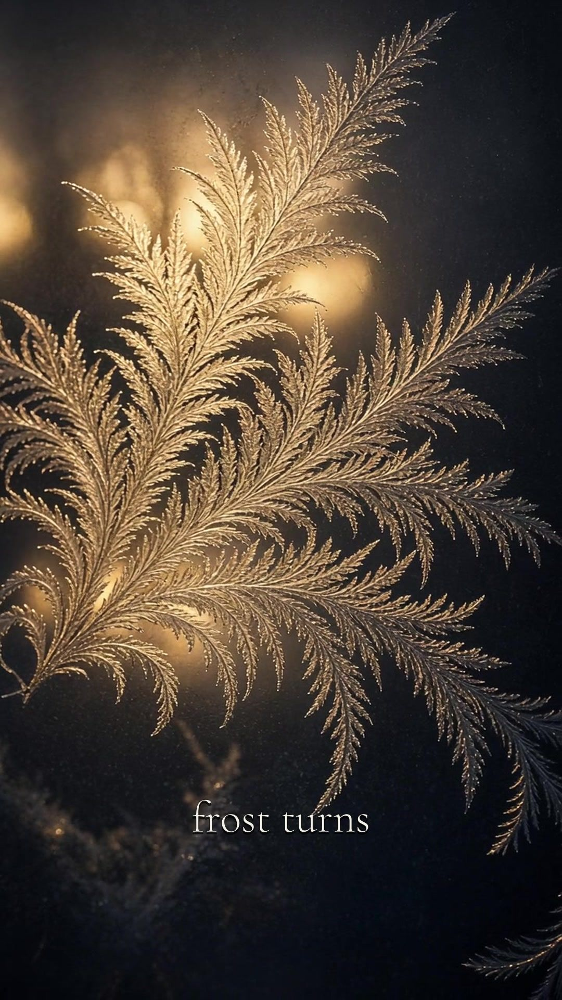

Frost turns
I went looking for why window frost curves when snowflakes don't. The first page I found ends on the question and doesn't answer it. Snowflakes are straight and six-fold. Frost on glass sweeps.

Snow grows from vapour, freely in space. The curving frost mostly grows as a thin film of supercooled water freezing along the glass, confined between two surfaces. One write-up calls it film frost. An early study found that both the pattern and the crystal lattice bend. A branch starts as a thin blade with its six-fold axis lying flat. As it grows, that axis tilts up until it points straight out of the glass. Once it's there, the crystal spreads broadly and stops turning.
Nobody is sure what does the pushing. The one explanation I found calls itself a guess: a thin melt layer under the blade tip that pushes the ice away from the glass. Not just water expanding as it freezes, since other liquids curve the same way.
A snowflake is straight because nothing touches it. Frost on glass bends because it's growing pressed against something, and keeps turning until it's lying the way it wants to. Then it settles and spreads.
I'd rather be the frost.
Sources: Atmospheric Optics, Windscreen frost · The Story of Snow, Curved Film Frost, Part 1